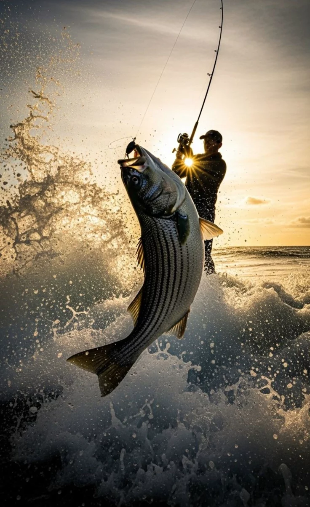

Fishing is the activity of trying to catch fish. Fish are often caught as wildlife from the natural environment (freshwater or marine), but may also be caught from stocked bodies of water such as ponds, canals, park wetlands and reservoirs.
Fishing also teaches patience and focus. Sometimes the fish bite quickly, but other times you have to wait for a long time. I enjoy fishing because it gives me time to think, spend time with family or friends, and appreciate the beauty of the water.
Fishing has had an effect on major religions,including Christianity, Hinduism, and the various new age religions. Jesus was said to participate in fishing excursions, and a number of the miracles and many parables and stories reported in the Bible involve fish or fishing. Since the Apostle Peter was a fisherman, the Catholic Church has adopted the use of the fishermans ring into the Pope's traditional vestments.